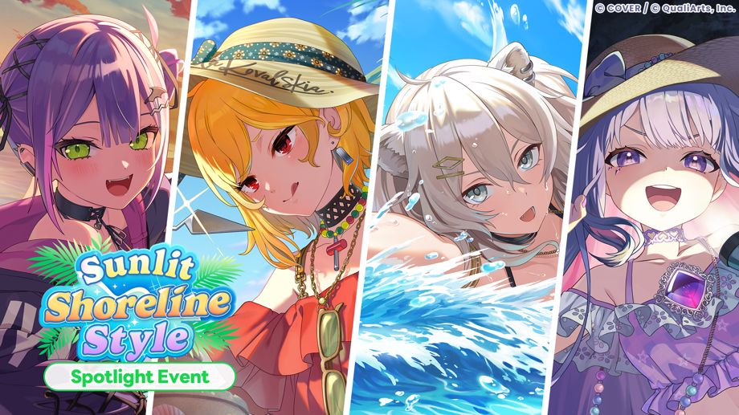
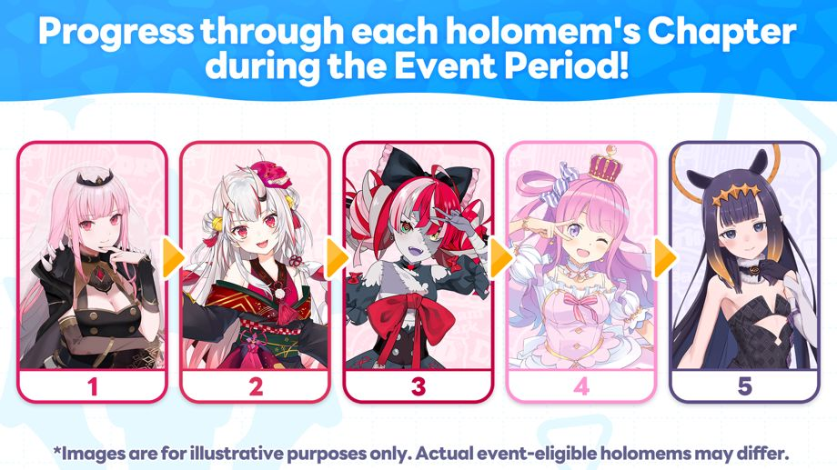
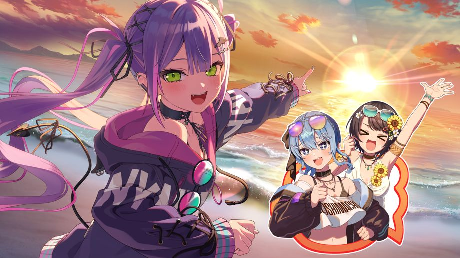
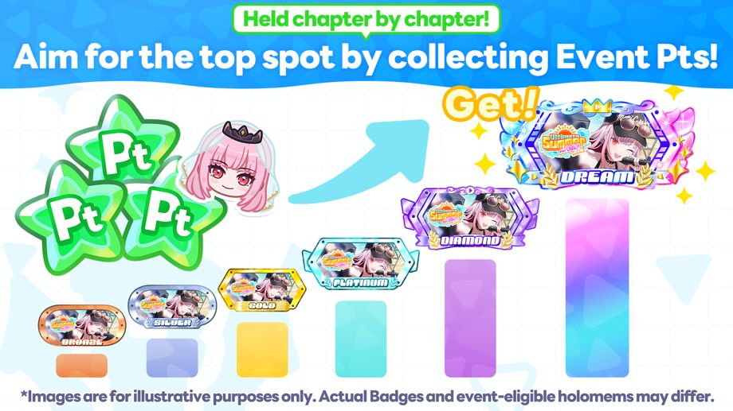
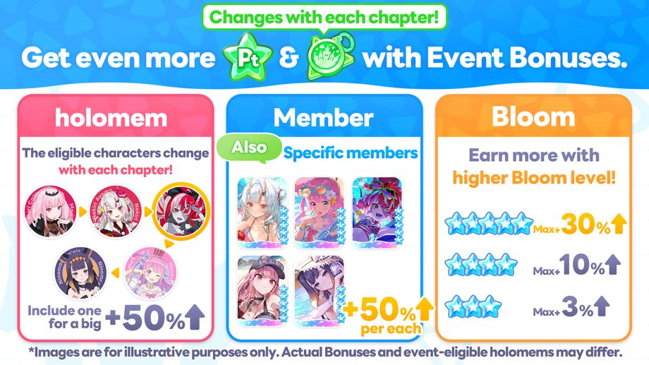
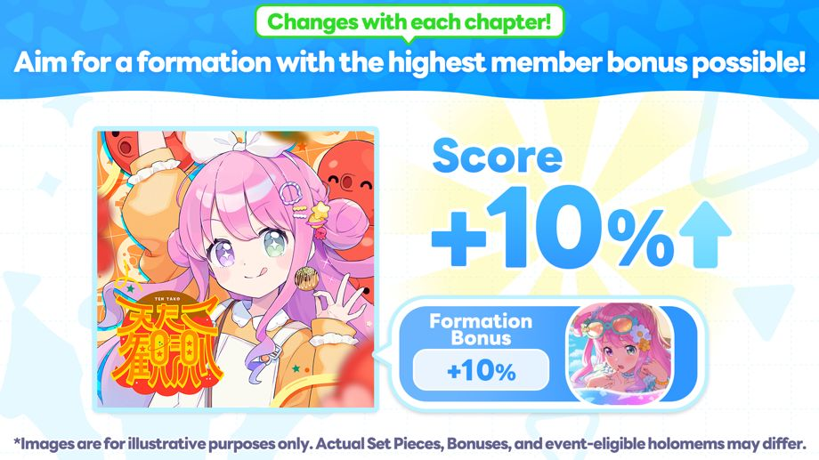
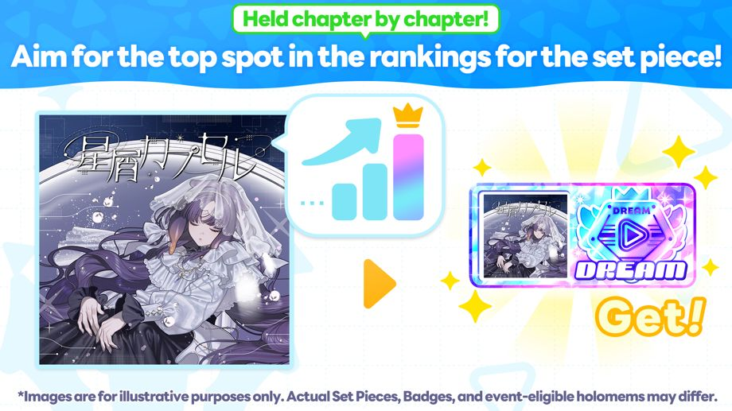

The Spotlight Event "Sunlit Shoreline Style" is now underway!
◆Entry Conditions
Clear Main Story Chapter 1 Episode 4 “Mythical Connection”.
◆Event Period
・Event Period
2026-10-19 20:00:00,2026-10-27 19:59:59
・Chapter 1: Tokoyami Towa
2026-10-19 20:00:00,2026-10-21 19:59:59
・Chapter 2: Kaela Kovalskia
2026-10-21 20:00:00,2026-10-23 19:59:59
・Chapter 3: Shishiro Botan
2026-10-23 20:00:00,2026-10-25 19:59:59
・Chapter 4: Koseki Bijou
2026-10-25 20:00:00,2026-10-27 19:59:59
◆Result Announcement Period
Chapter 1: 2026-10-22 12:00:00 ~
Chapter 2: 2026-10-24 12:00:00 ~
Chapter 3: 2026-10-26 12:00:00 ~
Chapter 4: 2026-10-28 12:00:00 ~
The deadline for announcing results is the same for all chapters: 2026-11-02 19:59:59
◆Ranking Rewards Distribution Period
2026-10-28 12:00:00,2026-11-02 19:59:59
◆Event Badge Exchange Limit
2026-11-02 19:59:59
Event Outline

In the Spotlight Event, each chapter is separated by one of the holomem.
You can earn Event Pts and Event Badges from Live and Minigames for each chapter period.
Collect Event Pts from each chapter to view the story for that chapter.
Also, you exchange Event Badges earned in each chapter for Event Memories and items at the Exchange.
◆Event Memory
・Chapter 1: Tokoyami Towa

・Chapter 2: Kaela Kovalskia

・Chapter 3: Shishiro Botan

・Chapter 4: Koseki Bijou

Event Pts Ranking

The Event Pts Ranking held in each chapter is based on the total number of Event Pts earned during the period.
If you place in the rankings, you'll earn rewards such as Event-exclusive Badges.
* For details, please go to [Event] → [Ranking] → [Event Pts Ranking].
Event Bonus

In the Spotlight Event, the requirements for Event Bonuses vary by chapter.
Event Bonuses include bonuses that increase the amount of Event Pts and Event Badges you earn from Live.
There are three types of bonuses you can earn in Lives: "Member Bonus", "holomem Bonus", and "Bloom Bonus".
・Member Bonus: Earn more rewards from Live with eligible Members.
・holomem Bonus: Earn more rewards from Lives with eligible holomems.
・Bloom Bonus: Earn more rewards from Live based on assembled Bloom level.
Additionally, Event Bonuses include bonuses that increase the amount of Event Pts and Event Badges you earn from Minigames.
There are two types of bonuses you can earn in Minigames: "Minigame Bonus" and "Member Bonus".
・Minigame Bonus: Earn more rewards when playing the eligible Minigames.
・Member Bonus: Earn more rewards just by owning eligible Members.
◆Event Bonus Eligible holomems
・Chapter 1: Tokoyami Towa
・Chapter 2: Kaela Kovalskia
・Chapter 3: Shishiro Botan
・Chapter 4: Koseki Bijou
◆Event Bonus Eligible Members (Applies to All Chapters)
・★5 "Shady Hammock Days" Tokoyami Towa
・★5 "Shady Shiny Memory" Kaela Kovalskia
・★5 "Slurping Frenzy" Shishiro Botan
・★5 "Beaming Sandcastle" Koseki Bijou
◆Event Bonus Eligible Minigames (Applies to all chapters)
・Collect Cooking
* For details, please go to [Event] → [Event Bonus].
Event Score Bonus

Event Bonuses include a temporary Score Bonus that increases your score when you challenge Event Set Pieces with eligible Members in your unit.
The Members eligible for Score Bonuses vary depending on the Event Set Pieces.
Event Set Pieces changes with each chapter.
◆Event Set Piece
Chapter 1: Shallow Shadow
Chapter 2: Forge My Soul
Chapter 3: Amaryllis
Chapter 4: CORE//UNBREAKABLE
* For details, please go to [Event] → [Event Bonus].
High Score Ranking

The High Score Ranking held in each chapter is a limited-time ranking where players compete for the highest score on each Event Set Piece.
If you place in the rankings, you'll earn event-exclusive Badges.
* Both event-limited and regular scores of Event Set Pieces will be saved.
* For details, please go to [Event] → [Ranking] → [High Score Ranking].
Important Notes
・Event Pts and Event Badges earned during this event cannot be carried over to the next event.
・Please be aware that Event Badges that have passed their exchange deadline cannot be used.
・Ranking Rewards can be claimed during the Ranking Rewards distribution period by logging in and going to [Dream Park] → [Menu Icon] → [Gifts]
・Even if you do not login during the Ranking Rewards distribution period, you can claim them from Gifts afterwards.
・Any Mission Rewards that were not claimed during the Ranking Rewards distribution period can be claimed later from going to [Dream Park] → [Menu Icon] → [Gifts]
・Event Memories that are available to exchange in this event may return in the future.
・You can check the Event Story after results have been announced by going to [Theater] → [holomem Story] → [Each holomem’s holomem Story].
・Due to network conditions and other factors, there may be a discrepancy of approximately one second from the scheduled start and end times.
・The duration and contents may change without warning.
・For details about the event, please go to [Dream Park] → [Event].